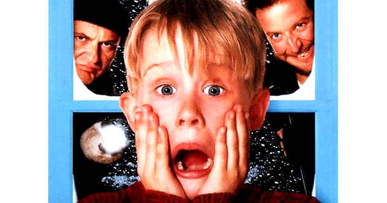
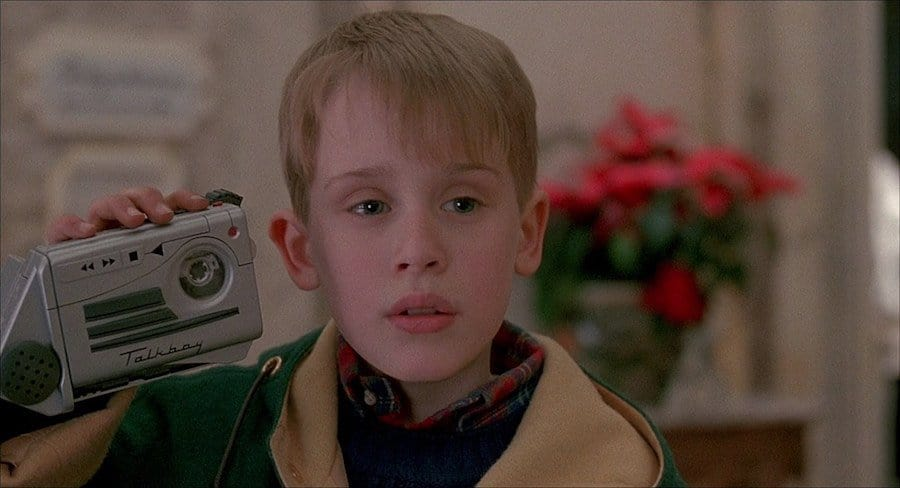

STORY LINE
It is Christmas time and the McCallister family is preparing for a vacation in Paris, France. But the youngest in the family, Kevin (Macaulay Culkin), got into a scuffle with his older brother Buzz (Devin Ratray) and was sent to his room, which is on the third floor of his house. Then, the next morning, while the rest of the family was in a rush to make it to the airport on time, they completely forgot about Kevin, who now has the house all to himself. Being home alone was fun for Kevin, having a pizza all to himself, jumping on his parents' bed, and making a mess. Then, Kevin discovers about two burglars, Harry (Joe Pesci) and Marv (Daniel Stern), about to rob his house on Christmas Eve. Kevin acts quickly by wiring his own house with makeshift booby traps to stop the burglars and to bring them to justice.
TITLE : HOME ALONE
DIRECTOR : Chris Columbus
STARS
Macaulay Culkin
Joe Pesci
Daniel Stern
Catherine O'Hara
Angela Goethals
Devin Ratray
Genres: COMEDY
AGE RESTRICTION : 13PG
DURATION TIME : 1h:10 min
a brief synopsis of the movie
The McCallister family is preparing to spend Christmas in Paris, gathering at Peter and Kate's home in a Chicago suburb on the night before their departure. Peter and Kate's youngest son, Kevin, is the subject of ridicule by his older siblings. Later, Kevin accidentally ruins the family dinner and their flight tickets to Paris after a scuffle with his older brother Buzz, resulting in him getting sent to the attic of the house as a punishment, where he berates Kate and wishes that his family would disappear. During the night, heavy winds damage, and resets the alarm clocks, causing the family to oversleep. In the confusion and rush to get to the airport, Kevin is accidentally left behind.
SHOWING TIME2:10am
DATE17 january 2021
 